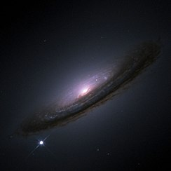

10. Ֆիզիկական փոփոխական աստղեր։ Բռնկվող, նոր և գերնոր աստղեր: Բաբախիչներ
Փոփոխական աստղեր
Փոփոխական աստղեր, որոնց տեսանելի պայծառությունը փոփոխվում է ժամանակի ընթացքում։ Հայտնի Փոփոխական աստղերի թիվն այժմ անցնում է 30000-ից (1986)։ Ցուրաքանչյուր համաստեղության սահմաններում Փոփոխական աստղերը նշանակում են լատինական տառերով՝ R-ից մինչև Z (օրինակ, T Ցուլի կամ RR Քնարի) կամ էլ աստղի համարի և համաստեղության անվանման հետ գրվող V տառով (օրինակ, v 1057 Կարապի)։ Ըստ պայծառության փոփոխությունների պատճառի տարբերում են խավարուն և ֆիզիկական Փոփոխական աստղեր։ Խավարուն Փոփոխական աստղեր սեղմ կրկնակի աստղեր են, որոնց պայ– ծառության փոփոխությունները թվացող են և առաջանում են բաղսդրիչ աստղերի պարբերական խավարումների հետևանքով։ Ֆիզիկական Փոփոխական աստղերի պայծառությունը փովւոխվում է դրանց մթնոլորտում կամ ավելի խոր շերտերում տեղի ունեցող ֆիզիկական երևույթների հետևանքով։ Տարբերում են պարբերական (բաբախող) և պայթունային (էրուպտիվ) փոփոխական աստղեր։ Պարբերական Փոփոխական աստղերի պայծառությունը փոփոխվում է պարբերաբար, իսկ պայթունային Փոփոխական աստղերինը՝ անկանոն կերպով՝ անընդհատ կամ ժամանակ առ ժամանակ տեղի ունեցող բռնկումների ձևով։
Պարբերական Փոփոխական աստղերից են․ ցեֆեիդները (Ց Ցեֆեոսի տիպի), որոնց պայծառությունը Փոփոխվում է 1–2 աստղային մեծության չափով (պարբերությունը՝ 1–45 օր), RR Քնարի տիպի աստղերը, որոնց պայծառությունը փոփոխվում է 0,․5–1,5 աստղային մեծության չափով (պսրբերությունը՝ 1,2 օրից ոչ ավելի), երկար պարբերական փոփոխականները (0 Կետի տիպի), որոնց պայծառությունը փոփոխվոմ է մինչև 10 աստղային մեծության չափով (պարբերությունը՝ 80–700 օր) են։ Պայթունային Փոփոխական աստղերից նոր, գերնոր, նորանման, RW Կառավարի տիպի (կամ T Ցուլի տիպի), բռնկվող (UV Կետի տիպի) և այլ աստղեր։ Փոփոխական աստղերի ուսումնասիրությունը կարևոր է աստղերի ֆիզիկայի և էվոլյուցիայի խնդիրների լուծման համար։ Աստղասփյուռների հայտնագործումից հետո հաստատվեց, որ ֆիզիկական անկայունությունը, որի հետևանքով ի հայտ է գալիս աստղերի պայծառության փոփոխությունը, օրինաչափ փուլ է աստղերի էվոլյուցիայում։ Պարզվեց, որ անկանոն Փոփոխական աստղերի մեծ մասը, որոնց համար բնորոշ է ֆիզիկական․ անկայունությունը, գտնվում են էվոլյուցիայի վաղ փուլում։ Օրինակ, T Ցուլի տիպի աստղերը և դրանց նմանվող օբյեկտները (Ֆուորներ, Հերբիգ–Արոյի օբյեկտներ են) կազմում են T-աստղասփյուռների բնորոշ բնակչություն, այսինքն՝ ներկայացնում են աստղերի էվոլյուցիայի վաղ փուլեր։ T Ցուլի տիպի աստղերի պայծառությունը փոփոխվում է անկանոն ձևով՝ գրեթե անընդհատ։ Դրանք, սովորաբար, պատկանում են աստղերի ուշ սպեկտրային տիպերին։ Այդ աստղերի սպեկտրներում դիտվում են պայծառ գծեր, որոնք վկայում են դրանց շուրջը գազային թաղանթների գոյության մասին։ Այդ թաղանթները, որտեղ և առաջանում են պայծառ սպեկտրային գծերը, T Ցուլի տիպի աստղերի մակերևույթներից նյութի արտահոսքի հետևանք են։ Աստղերի էվոլյուցիայի T Ցուլի փուլին հաջորդում է բռնկվող աստղերի փուլը։ Այդ փուլում աստղի կարևորագույն հատկությունը ժամանակ առ ժամանակ բռնկվելու ունակությունն է։
Բռնկման ժամանակ աստղի ճառագայթման հզորությունը (պայծառությունը) անակնկալ կերպով և շատ արագ աճում է, այնուհետև դանդաղ վերադառնում նախկին մակարդակին։ Բռնկվող աստղերի սպեկտրներում դիտվում են թույլ պայծառ գծեր, որոնք ուժեղանում են բռնկումների պահերին։ T Ցուլի տիպի և բռնկվող աստղերի էվոլյուցիոն փուլերը վերադրվում են ժամանակի առումով, այդ շրջանում T Ցուլի տիպի աստղը միաժամանակ ցուցաբերում է բռնկվող աստղի հատկություններ։ T Ցուլի տիպի և բռնկվող աստղերի ուսումնասիրությունը կարևոր է նաև դրանցում տեղի ունեցող և անկայունությունը պայմանավորող երևույթների բնույթն ուսումնասիրելու համար։ T Ցուլի տիպի և բռնկվող աստղերի վերաբերյալ շատ արդյունքներ ստացվել են Բյուրականի աստղադիտարանում։ Փոփոխական աստղերի ուսումնասիրությունը նպաստում է Տիեզերքի և Գալակտիկայի կառուցվածքի բացահայտմանը։ Օրինակ, ցեֆեիդների պայծառությունը փոփոխվում է խիստ պարբերական ձևով։ Աստղի պայծառության Փոփոխության պարբերությունն աճում է լուսատվության հետ։ Ելնելով այդ օրինաչափությունից՝ որոշում են այն աստղային համակարգերի հեռավորությունները, որտեղ դիտվում են ցեֆեիդներ, հետևաբար նաև այդ համակարգերի բաշխումը Գալակտիկայում կամ տարածության մեջ։
\
Գերնոր աստղեր
Սուպերնովա (հոգնակի ՝ սուպերնովաներ) հզոր և լուսավոր աստղային պայթյուն է։ Այս անցումային աստղագիտական իրադարձությունը տեղի է ունենում զանգվածային աստղի վերջին էվոլյուցիոն փուլերում կամ երբ սպիտակ գաճաճը հարուցվում է վերջնական միջուկային միաձուլման մեջ։ Բնօրինակ առարկան, որը կոչվում է ծնող, կամ փլուզվում է նեյտրոնային աստղի կամ սև խոռոչի մեջ, կամ այն ամբողջովին ոչնչանում է։ Սուպերնովայի օպտիկական լուսավորության գագաթնակետը կարող է համեմատվել մի ամբողջ գալակտիկայի հետ, նախքան մի քանի շաբաթ կամ ամիս անց մարելը։
Սուպերնովաները նովաներից ավելի ակտիվ են։ Լատիներենում, նովան նշանակում է «նոր» ՝ աստղաբաշխորեն վկայակոչելով ժամանակավոր նոր պայծառ աստղը:«Սուպեր» նախածանցի ավելացնելը օգնում է տարբերել նրանց սովորական նովաներից, որոնք շատ ավելի քիչ լուսավոր են։ Սուպերնովա բառը ստեղծվել է Վալտեր Բադեի և Ֆրից Զվիկիի կողմից 1929 թվականին։ Ծիր Կաթին - ում նորագույն դիտարկված սուպերնովան 1604 թ.-ի Քեպլերի Սուպերնովան է, բայց վերջերս հայտնաբերվել են ավելի նոր մնացորդներ։ Սուպերնովաների ուսումնասիրումները այլ գալակտիկաներում ցույց էն տալիս,որ դրանք Ծիր Կաթին - ում այսպիսի պայթյունները տեղի են ունենում միջին հաշվով մոտավորապես երեք անգամ, ամեն դար։ Այս պայթյունները գրեթե դիտելի կլինեին ժամանակակից աստղագիտական աստղադիտակների միջոցով:Նորագույն անզեն աչքով նկատելի սուպերնովան SN 1987A- ն էր ՝ Ծիր Կաթին -ի արբանյակում,Մեծ Մագելանյան Ամպում ՝ կապույտ գերծանրքաշային աստղի պայթյունը։

Տեսական ուսումնասիրությունները ցույց են տալիս, որ սուպերնովաների մեծ մասը առաջանում են երկու հիմնական մեխանիզմներից մեկով՝ անկումնային աստղում միջուկային միաձուլման հանկարծակի կրկին բոցավառումով կամ զանգվածային աստղի միջուկի հանկարծակի գրավիտացիոն փլուզումով։ Առաջնային իրադարձություններից հետո օբյեկտի ջերմաստիճանը բավականաչափ բարձրացվում է` վերջնական միջուկային միաձգման ձգման համար` ամբողջությամբ խաթարելով աստղը:Հնարավոր պատճառները` երկուական ուղեկից նյութերի կուտակումն է կուտակման միջոցով կամ աստղային միաձուլման միջոցով։ Զանգվածային աստղի դեպքում,զանգվածային աստղի կորիզը կարող է հանկարծակի փլուզման ենթարկվել՝ ազատելով գրավիտացիոն պոտենցիալ էներգիան՝ որպես սուպերնովա։ Թեև դիտարկված սուպերնովաներից ոմանք ավելի բարդ են, քան այս երկու պարզեցված տեսությունները, այս աստղաֆիզիկական մեխանիզմները ընդունվել են աստղագետների կողմից։
Սուպերնովաները կարող են արտանետել մի քանի արևային զանգվածներ ունեցող նյութ ՝ լույսի արագության մինչև մի քանի տոկոս արագությամբ։ Սա ընդլայնվող ցնցող ալիք է մղում շրջակա միջաստղային միջոցի մեջ և ավելացնում է գազի և փոշու ընդլայնվող կեղև, որը դիտվում է որպես սուպերնովայի մնացորդ։ Սուպերնովաները միջաստղային միջավայրում տարրերի հիմնական աղբյուր են `թթվածնից մինչև ռուբիդիում։ Սուպերնովաների ընդլայնվող ցնցող ալիքները կարող են հանգեցնել նոր աստղերի ձևավորմանը։ Սուպերնովաների մնացորդները կարող են լինել տիեզերական ճառագայթների հիմնական աղբյուրը։ Սուպերնովաները կարող են առաջացնել գրավիտացիոն ալիքներ,սակայն մինչ օրս գրավիտացիոն ալիքները հայտնաբերվել են միայն սև խոռոչների և նեյտրոնային աստղերի միաձուլման ժամանակ։